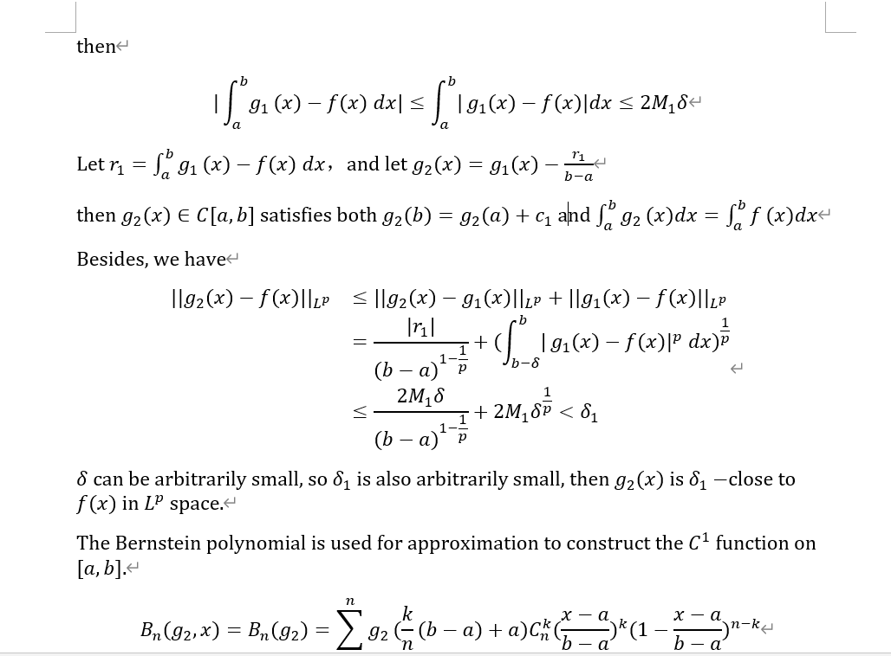

Tex语法检查
两个方法：
1.IDE自带的语法检查，但是不同IDE操作不一样，我用的是TeXworks；
2.优雅地转为word，然后用word进行语法检查。
TeXworks编译器语法检查
TeXworks Manual原文
You can turn on automatic spell-checking of your source document from Edit→Spelling→$<$language$>$. It is also possible to ask TEXworks to enable spell-checking by default by setting a dictionary in Edit→Preferences. . .→Editor→Spell-check language.
During typing, every word the spell-checker considers wrong is underlined by a red wavy line. A right-click on the word opens a contextual menu in which there are some replacement suggestions. Click on the desired word to make the replacement.
Before using the spell-checker, you need to install dictionaries in the right folder of TEXworks: $<$resources$>$\dictionaries. The $<$resources$>$ folder can be accessed easily via Help→Settings and Resources. . . .
具体操作就是
- 在TeXworks的
Help菜单栏下选择Settings and Resources，点那个链接也就是资源所在目录，进入后创建dictionaries文件夹（如果没有的话），进入文件夹 - 下载词典：https://extensions.openoffice.org/en/search?f%5B0%5D=field_project_tags%3A157
oxt后缀改为zip后缀解压， 将其中的.dic和.aff文件复制到dictionaries文件夹下- 重新打开TeXworks，可进行以下任意一种操作，前者只在当前窗口有效，后者永久设置
- turn on automatic spell-checking of your source document from Edit→Spelling→$<$language$>$.
- Edit→Preferences. . .→Editor→Spell-check language.
tex转为word
windows系统用powershell，当然此前得安装一下pandoc
1 | pandoc -s source.tex -o target.docx |
这操作……说不出的美丽。。我随意截一部分感受一下，以下的内容比较随意不要细看。。

其实主要是因为，医学生物类的期刊emmm主要支持word，上次我不知道这种操作，在word上装了wordtex后智障地把公式重打了一遍。。。wordtex打公式依旧离不开鼠标，太笨拙了……